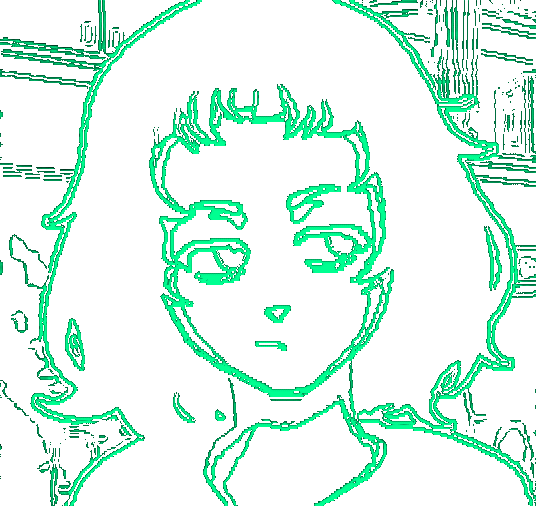

Milk Inside a Bag of Milk Inside a Bag of Milk

- Description: Immerse yourself in the bizarre and surreal world of milk-filled bags, where reality and unreality blend in this unique horror experience. It is not a traditional point-and-click game; instead, it often involves exploration and interaction with the game environment. The game's unique style and narrative contribute to its surreal and unconventional play experience.
- Genre: Surreal Horror
- Short Duration: 10-15 minutes
- Unique Graphic Style
- Authentic Audio Solutions